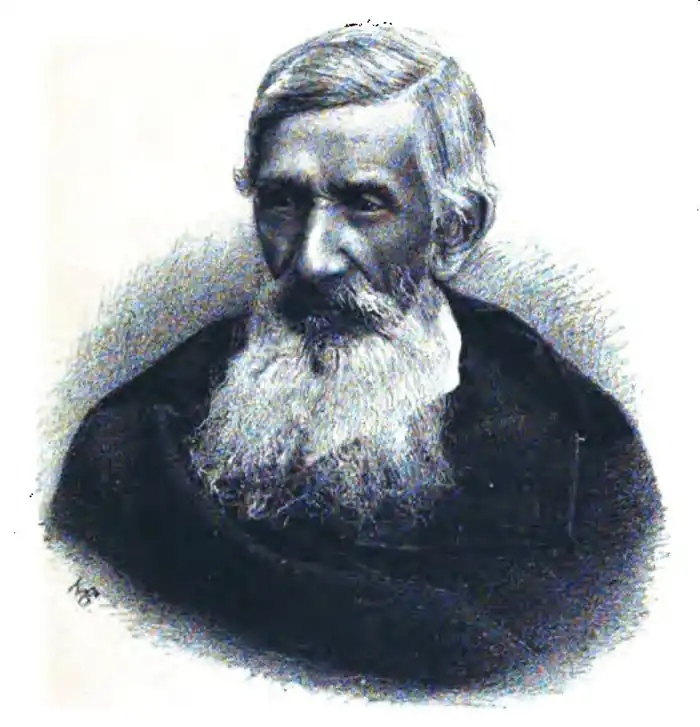
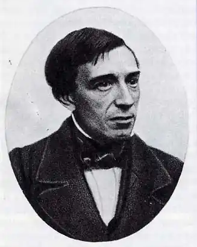

Ізмаїл Іванович Срезневський належить до тих діячів культури, щодо яких між представниками двох "братніх народів" не вщухають суперечки. Російські джерела згадують про нього як про "видатного російського філолога", а українські, у свою чергу, називають його "українським письменником". І ті, й інші мають підстави вважати саме так, а не інакше. Але замість до хрипоти доводити суперникам власну правоту, спробуємо з’ясувати причини такого поділу думок і знайти у особистості Ізмаїла Срезневського не те, що розділяє нас, а те, що об’єднує.
Ізмаїл Срезневський народився 1812 року в інтелігентній та освіченій родині – його батько, Іван Овсійович був поетом та перекладачем, професором кафедри російського красномовства та древньої словесності у Демидівському училищі вищих наук. На момент його народження, родина мешкала у Ярославлі, однак коли Ізмаїлу Срезневському минуло лише кілька тижнів від народження, батькові запропонували посаду професора у Харківському університеті, відтак сім’я Срезневських переїхала до Харкова.
У віці семи років Ізмаїл залишився без батька, тому обов’язки з його навчання взяла на себе мати – розумна та освічена жінка. Під її керівництвом син здобув гарну домашню освіту, а у віці лише 14 років вступив до Харківського університету на факультет етико-політичних наук, де вже за три роки блискуче захистив кандидатську дисертацію. Ізмаїл Срезневський рано виявив свої літературні здібності – з восьми років він почав складати вірші, а у шістнадцять чітко визначився з тим, чому воліє присвятити своє подальше життя. У листах до рідні юний Срезневський писав, що хоче стати вченим і займатися науковими дослідженнями у галузі етнографії та літератури. Подібно до багатьох інших чоловіків шляхетного походження, Ізмаїл Срезневський служив у харківському депутатському дворянському зібранні, згодом – у суді. Але державна служба та політична діяльність зовсім не приваблювали його, тому свій вільний час він присвячував викладанню у пансіонах та літературним експериментам. У 1831 році Срезневський долучився до видання "Украинского Альманаху", де зокрема було опубліковано – щоправда, під псевдонімом – декілька його віршів. *Після закінчення університету Срезневський здобув посаду на кафедрі політекономії та статистики, під час праці на якій написав докторську дисертацію "Опыт о предмете и елементах статистики и политической экономики". Але захистити її не вдалося, бо хлопця вабили зовсім інші світи – де мешкали слов’яни-сонцепоклонники, що розмовляли забутими мовами і співали химерних пісень, і у яких не було місця сухим цифрам і нудним економічним розрахункам. Вирішивши остаточно присвятити себе славістиці, Срезневський вирушає у трирічні мандри слов’янськими землями, де збирає матеріал, що згодом стане наріжним каменем для наукового вивчення слов’янської палеографії, яким до Срезневського не займався ще ніхто. У 1842 році він стає першим професором-славістом Харківського університету, а у 1846 році блискуче захищає дисертацію "Святилища и обряды языческого богослужения древних славян по свидетельствам современным и преданиям", завдяки якій стає першим у Російській Імперії доктором слов’янської філології. Пізніше, у 1855 році, Ізмаїла Срезневського, на той момент вже академіка Петербурзької Академії Наук буде призначено деканом історико-філологічного факультету Петербурзького університету – цю посаду він обійматиме до самої своєї смерті у 1881 році… Слов’янський, а зокрема український фольклор – іще одна любов Ізмаїла Срезневського, вірність якій він зберігав протягом усього свого життя. Ще у студентські роки він був одним із засновників харківського гуртка поетів-романтиків, учасники якого крім іншого надавали грандіозного значення фольклорним творам з минулих часів, бо вважали їх за джерело, з якого поети майбутнього можуть черпати неймовірні скарби для власного досвіду. Сам Срезневський також писав літературні твори українською мовою – вірші, балади, оповідання тощо. Цікаво, що погляди Срезневського на українську мову навряд чи сподобалися б сучасним українцям, борцям за свободу та незалежність – натомість, великодержавні російські шовіністи знайшли б тут гарний привід аби зловтішно потирати руки. На початку своїх досліджень він вважав "малоруську" окремою мовою, проте згодом дійшов висновку, що вона, так само як і білоруська, є діалектом певної давньоруської мови, котра, природно, не дійшла до наших часів у первозданному вигляді. У своїй праці "Мысли об истории русского языка" Срезневський пише: "Давни, но не исконны черты, отделяющие одно от другого наречия северное и южное – великорусское и малорусское; не столь уже давни черты, разрознившие на севере наречия восточное – собственно великорусское и западное – белорусское, а на юге наречие восточное – собственно малорусское и западное – русинское, карпатское; ещё новее черты отличия говоров местных, на которые развилось каждое из наречий русских. Конечно, все эти наречия и говоры остаются до сих пор только оттенками одного и того же наречия и нимало не нарушают своим несходством единства русского языка и народа." *Такою була думка Срезневського щодо болючого "мовного питання", як ми називаємо його тепер. Але слід зауважити, що у цій точці зору не було жодної краплі політики – лише приватна думка науковця, жодна з яких, як відомо, не може претендувати на безпомильність. Важливе значення для нас має інше: для Срезневського це не було приводом для знищення "діалектів", навпаки – значну кількість свого життя він присвятив збереженню української словесності, її розвиткові та поширенню поміж людей. Адже протягом багатьох років Ізмаїл Срезневський, подорожуючи українськими землями, збирав український фольклор. У період з 1833 по 1838 роки від видає три збірки "Запорожская старина", у яких викладає величезну кількість народних пісень та дум, які записав у Харківській, Полтавській та Запорізькій губерніях. Крім вже згаданого "Украинского Альманаха" він також видавав "Украинскій Сборникъ", до роботи над яким також долучалися Микола Гоголь та Михайло Щепкін – актор театру Котляревського. У цьому альманасі, що, на жаль, складається лише з двох книг, друкувалися драматичні твори Івана Котляревського, шедеври українського фольклору, статті Ізмаїла Срезневського, присвячені необхідності вивчення української словесності та інші цінні матеріали. У своїй роботі Срезневський завжди наголошував на необхідності вивчення не лише тогочасної літературної мови, а й різноманітних діалектів, укладання регіональних словників задля збереження місцевих особливостей мови, вивчення історичної граматики. Саме він дав світові перший науковий опис особливостей української мови з філологічної точки зору. Парадоксально – але Ізмаїл Срезневський, людина, котра не вірила у самостійність української мови, маючи в руках лише перо, папір і чорнило, зробила для неї набагато більше, ніж багато хто з тих, хто на кожному кроці кричить про необхідність боронити її від ворогів зі зброєю в руках…. Ольга Герасименко